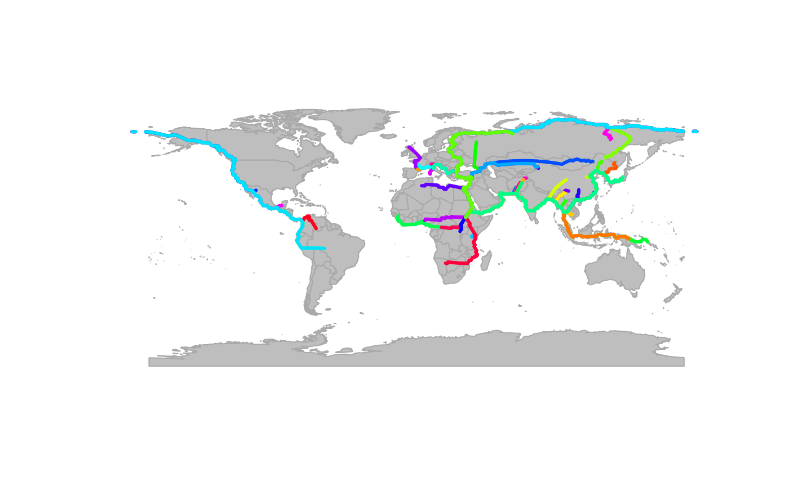

The class gPath is an S3 class storing the results of shortest path
computations between nodes in a gGraph object. Paths are computed
using Dijkstra's algorithm via the RBGL package and represent the
minimum-cost routes connecting pairs of nodes in the graph.
Details
gPath objects are primarily created as outputs from dijkstraFrom,
dijkstraBetween, and polygonBetween applied to gGraph or gData objects.
The structure is based on the output from RBGL's sp.between function,
enhanced with geographic coordinate information.
Creating gPath objects
gPath objects are created by dijkstra methods. Direct construction is not recommended.
Structure
A named list where each element represents a path between two nodes, containing:
path_detail: a character vector of node names from source to destination.length: a numeric value giving the total cost of the path.
An xy attribute stores a matrix of spatial coordinates (longitude and
latitude) for all nodes referenced in the paths, with node identifiers
as row names.
See also
dijkstraFrom, dijkstraBetween and polygonBetween to create gPath
objects. plot.gPath to visualize paths. gPath2dist to extract
distances. gGraph and gData for related classes.
Examples
ori <- closestNode(worldgraph.40k, cbind(33, 10))
myPath <- dijkstraFrom(hgdp, ori)
## examine the structure
length(myPath) # number of paths
#> [1] 52
myPath[[1]]$path_detail # nodes in first path
#> [1] "32713" "33353" "33993" "34633" "35273" "35913" "36553" "37193" "37833"
#> [10] "37832" "37831" "38471" "38470" "38469" "38468" "38467" "39107" "39106"
#> [19] "39105" "39104" "38463" "38462" "37821" "37820" "38460" "39101" "39741"
#> [28] "39740" "40380" "40379" "40378" "40377" "5891" "6531" "40375" "39735"
#> [37] "39095" "38454" "37813" "37172" "36531" "35890" "35889" "35888" "35887"
#> [46] "35246" "34605" "33965" "33325" "32684" "32683" "32682" "32681" "32040"
#> [55] "31399" "31398" "31397" "30756" "30115" "29475" "28835" "28194" "27553"
#> [64] "26912" "26272" "25631" "24990" "24349" "23708" "23707" "24347" "24346"
#> [73] "24345" "24985" "25626" "26266" "26906" "26905" "26904" "26903" "26902"
#> [82] "26901" "26900" "26899" "26898"
myPath[[1]]$length # cost of first path
#> [1] 38.755
myPath[[1]]$length_detail # details for each step
#> [[1]]
#> 32713--33353 33353--33993 33993--34633 34633--35273 35273--35913 35913--36553
#> 1.000 1.000 1.000 1.000 1.000 1.000
#> 36553--37193 37193--37833 37833--37832 37832--37831 37831--38471 38471--38470
#> 1.000 0.665 0.330 0.330 0.330 0.330
#> 38470--38469 38469--38468 38468--38467 38467--39107 39107--39106 39106--39105
#> 0.330 0.330 0.330 0.330 0.330 0.330
#> 39105--39104 39104--38463 38463--38462 38462--37821 37821--37820 37820--38460
#> 0.330 0.665 0.665 0.330 0.330 0.330
#> 38460--39101 39101--39741 39741--39740 39740--40380 40380--40379 40379--40378
#> 0.330 0.330 0.330 0.330 0.330 0.330
#> 40378--40377 40377--5891 5891--6531 6531--40375 40375--39735 39735--39095
#> 0.330 0.330 0.330 0.330 0.330 0.330
#> 39095--38454 38454--37813 37813--37172 37172--36531 36531--35890 35890--35889
#> 0.330 0.330 0.330 0.330 0.330 0.330
#> 35889--35888 35888--35887 35887--35246 35246--34605 34605--33965 33965--33325
#> 0.330 0.330 0.330 0.330 0.330 0.330
#> 33325--32684 32684--32683 32683--32682 32682--32681 32681--32040 32040--31399
#> 0.330 0.330 0.330 0.330 0.330 0.330
#> 31399--31398 31398--31397 31397--30756 30756--30115 30115--29475 29475--28835
#> 0.330 0.330 0.330 0.330 0.330 0.330
#> 28835--28194 28194--27553 27553--26912 26912--26272 26272--25631 25631--24990
#> 0.330 0.330 0.330 0.330 0.330 0.330
#> 24990--24349 24349--23708 23708--23707 23707--24347 24347--24346 24346--24345
#> 0.665 0.665 0.330 0.330 0.330 0.330
#> 24345--24985 24985--25626 25626--26266 26266--26906 26906--26905 26905--26904
#> 0.330 0.330 0.330 0.330 2.665 2.665
#> 26904--26903 26903--26902 26902--26901 26901--26900 26900--26899 26899--26898
#> 0.330 0.330 0.330 0.330 0.330 0.330
#>
## get coordinates of nodes in paths
head(attr(myPath, "xy"))
#> lon lat
#> 32713 33.01964 10.37995
#> 33353 33.60165 11.23682
#> 33993 34.19030 12.09397
#> 34633 34.78602 12.95142
#> 35273 35.38923 13.80909
#> 35913 36.00000 14.66729
## plot the paths
plot(worldgraph.40k, col = NA, reset = TRUE)
plot(myPath)
